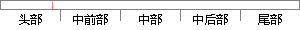

4 ARM处理器的异常处理
片段位置图

相似结果
相似片段：所有ARM处理器都共享这一体系结构。ARM体系结构具有以下特点: 4 第2章相关技术...当处理器的复位电平有效时,产生复位异常,程序跳转到复位(Reset) 复位异常处理...
| 标题 | 《基于ARM的远程视频监控系统研究》 |
| 对比库 | 中国学位论文全文数据库 |
| 作者 | 汪灿华 |
| 机构 | 南昌大学 |
| 分类 | 通信与信息系统 |
| 年份 | 2007 |
| 相似率 | 70% （轻度抄袭） |
※ 片段修改建议 ※
近似词参考：- 处理：处置 处置惩罚
- 异常：非常 异样
系统自动生成语句：4 ARM处置器的非常处置
注：本片段修改建议为系统自动生成，仅供参考。